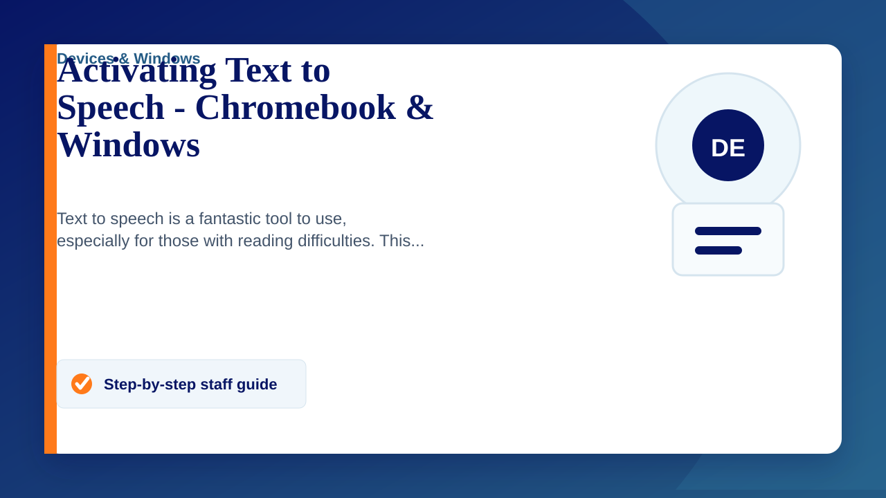

Text to speech can read selected content aloud on Chromebooks and Windows PCs. Use the steps below to enable it.
Chromebook
- Click the time in the bottom-right corner.
- Click the Accessibility icon. If it is not displayed, contact IT.
- Turn on "Select-to-speak".
- Click the Select-to-speak icon in the bottom-right corner.
- Click and drag over the text you want to hear.
- Use the displayed controls to play, pause, skip or change speed.
- Click the icon again to stop using the feature.
Windows
- Open Narrator by pressing Ctrl + Windows + N, or open Settings > Ease of Access > Narrator.
- Turn Narrator on.
- Press Ctrl if you need to stop Narrator reading immediately.
- Open the page containing the text you want read aloud.
- Click the content or use the arrow keys to choose what Narrator reads.
- Return to Narrator settings to turn it off when finished.